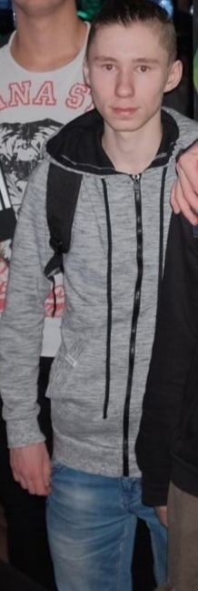

Антон Давыденко
По проверенным источникам - накроман. О степендии слышал только от одногруппников. Характер вольный, на пары ходит по приказу Генерала Гавса, а себе приказы предпочитает не отдавать, в связи с этим, ходит по необходимости. Не подтянул теорию, потому долги по физре. Бывший человек, будущий пропогандист дединсайдизма
